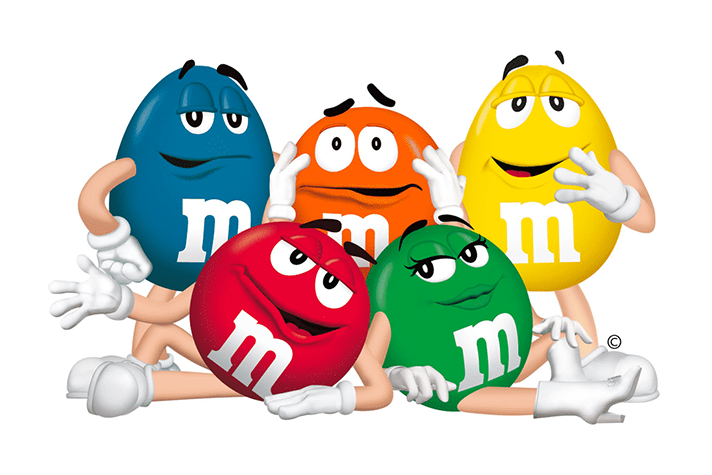
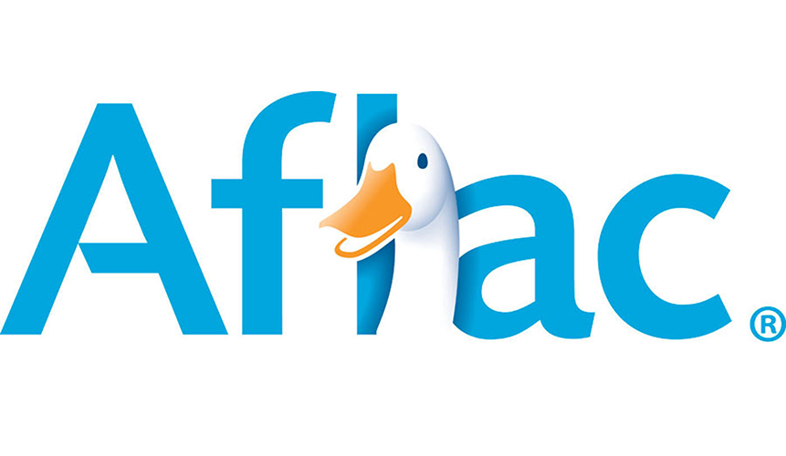

Meaning Is Built, Not Delivered
There is a comfortable way to think about marketing communication, and it is wrong. The comfortable version goes like this: you have an idea, you put it into words and pictures, you send it out through some channel, and it lands in the customer's head more or less intact. Communication is transmission. Get the message right and the job is done.
This is not a stupid model. It is how most org charts are drawn, how most media plans are budgeted, and how most people picture a press release working. It is also how the engineers who first formalized communication in the 1940s described it, and it captures something real — there is a sender, there is a channel, there is a receiver. The trouble is that it gets the one thing that matters backward. The message does not arrive intact. It gets rebuilt at the other end, by a person who was not in the room when it was written, who is half-watching, who carries a lifetime of associations the sender never accounted for. Meaning is not shipped. It is reconstructed. And the marketer controls only one side of that reconstruction.
That reframe is why Unit 4A comes first. Once you accept that meaning is constructed by the receiver — not handed over by the sender — almost everything in the rest of this unit follows. Why two people see the same ad and take away opposite things. Why a brand can mean one thing to its founder and something else entirely to its customers. Why a perfectly clear internal memo still gets misread. This first part covers the plumbing (how a message physically travels) and the code (how meaning gets made from signs). The standard treatments pair them deliberately, and so will we.
One framing assumption runs underneath every part of this unit, so it is worth stating once. Assume a contemporary consumer: attention-scarce, algorithmically-mediated, and mobile-first, meeting brands across fragmented paid, owned, earned, and shared touchpoints, trusting peers and creators over polished advertising, and expecting friction-free action. The classic models were written before that consumer existed in full. They still hold — but the conditions they operate under have shifted, and each section ends by showing how.
Most of you are not in marketing — you are in operations, HR, management, accounting. This unit is still about your work, because it is not really about advertising. It is about why a clear message gets received as something other than what you meant. The reorg announcement that sets off a panic, the policy memo nobody acts on, the onboarding doc that confuses every new hire: those are communication failures with the same anatomy as a failed ad. Learn the anatomy here and you can diagnose them anywhere.
The Communication Model, and Where It Breaks
The word communication comes from the Latin communis — "common." That root is not decoration. To communicate is to establish a commonness of thought between two parties, which means communication has not occurred just because a message was sent. It has occurred only when something is genuinely shared. A salesperson can deliver a flawless pitch to a buyer who is nodding along while scrolling her phone, and no communication has taken place at all — sound waves hit an eardrum, but no thought was held in common. Communication is something you do with another person, not something you do to them. Hold onto that. It is the whole reason the transmission model fails.
The standard sources draw essentially the same diagram for how a message moves, and it is worth keeping because it gives you a vocabulary for naming exactly where things go wrong.
& Channel
& Outcome
1.1 Encoding, Decoding, and the Overlap That Makes Meaning Possible
The source encodes: it translates a thought into symbolic form — a sentence, a logo, a price, a tone of voice. The receiver decodes: it works backward from those symbols to a meaning. The catch is that decoding does not run on the sender's mental dictionary. It runs on the receiver's. Each party brings a field of experience — the whole accumulated stock of what they have seen, learned, and lived — and a message only gets through to the extent that those two fields overlap. Where they overlap, the symbols mean roughly the same thing to both sides. Where they don't, the receiver fills the gap with their own associations, and the meaning that lands can be anything from slightly off to the exact opposite of what was intended.
This is the mechanism behind the reframe in the overview. Meaning is constructed at the receiving end, out of materials the sender does not own. The practical implication is uncomfortable: the more different your audience is from you, the less you can assume your encoding will decode the way you meant it. Marketing and advertising people skew young, urban, and educated; the markets they write for usually are not. A creative team that finds a joke obvious can be writing for millions of people who will read it flat, or wrong.
1.2 The Source Is Part of the Message
The diagram puts the source at the far left, as if its only job is to hand off a message and step aside. That undersells it badly. The source never leaves. The receiver decodes the message through their read of who is sending it — so identical words carry different meaning depending on the speaker's credibility, likability, and fit with the claim being made. Two brands can run the exact same line. If one is trusted and the other unknown, or one is playful and the other earnest, or one obviously fits the claim and the other obviously doesn't, the audience does not hear one message received two ways. It hears two different messages.
| The identical claim | Coming from… | …decodes as |
|---|---|---|
| "Built to last." | a century-old heritage brand | a statement of fact, pre-proven by the company's own survival |
| "Built to last." | a six-month-old startup | a hope, or a boast — an unproven claim read with a raised eyebrow |
| "Built to last." | a brand known for deadpan humor | possibly a wink — the audience scans for the joke before the literal meaning |
This is also why "on brand" is a communication constraint, not a style preference. A message that contradicts what a brand is known for does not just fall flat; it registers as noise, because the receiver has to reconcile the claim against the source and usually resolves the conflict against the claim. The same logic runs the modern playbook: today the most credible source is often not the brand at all but a peer or a creator the audience already trusts, which is precisely why brands pay to route identical claims through other people's mouths. The source can multiply a message or kill it.
The deeper point is that the boxes in Figure 4A.1 are not independent. Source, message, channel, and receiver interact — the meaning is a property of the whole loop, not of any one box. That is the sense in which communication is bigger than the sum of its parts. You can write a perfect message, and the wrong source, wrong channel, or wrong moment will still produce the wrong meaning.
1.3 Noise: The Thing That Gets In
Noise is any interference that distorts or interrupts the message, and the important point is that it is not confined to the channel. It enters at every stage. At encoding, a source that is unclear about its own objective produces a muddled, internally contradictory message before it ever leaves the building. In the channel, the message competes with everything else fighting for the same eyes — a crowded magazine page, a cluttered feed, a sales call interrupted by three texts. At decoding, the receiver is distracted, multitasking, or simply lacks the background knowledge to make sense of what arrived. A message can be encoded perfectly, sent through a clean channel, and still fail because the person on the other end was thinking about something else.
Naming the stage matters, because the fix is different at each one. Encoding noise is solved by getting clear on the objective before you write. Channel noise is solved by media choices and repetition. Decoding noise — the hardest — is solved by meeting the receiver inside their field of experience and by testing whether they actually understood, rather than assuming they did. The research is blunt on this last point: studies of televised messages have found miscomprehension rates around 30 percent, and even tightly controlled ad tests run 10 to 15 percent (Andrews & Shimp, 2018). Roughly a quarter to a third of any audience takes away something other than what you sent. Pretesting is not a nicety. It is how you find out which third.
1.4 Feedback: How the Source Finds Out
Feedback is the receiver's response routed back to the source, and it is what separates communication from broadcasting into the void. In a sales conversation it is instant — a frown, a question, a raised eyebrow tells the seller in real time whether the message is landing. In mass communication it is slower and indirect: sales figures, coupon redemptions, store visits, recall and attitude studies. Either way, feedback closes the loop. It is how the source learns whether the original message hit the target or needs to be re-cut. A communicator who never builds a feedback path is, functionally, talking to a wall and assuming the wall agrees.
The reorg announcement that triggers a week of hallway panic is this model failing on schedule. Leadership encodes ambiguously ("we're streamlining for agility"), the message travels through a channel thick with organizational noise (rumor, Slack, the last reorg's scars), and every employee decodes it through their own field of experience — which, for anyone who has survived layoffs, reads "streamlining" as "cuts." Notice the source effect at work here too: the identical email lands one way over a trusted manager's signature and another way over a CEO nobody has met. The fix is the same as for any communication failure: encode the actual objective plainly, anticipate how this audience will decode it, and build a feedback path so you learn what people actually heard before it hardens into fact.
- Communication is establishing a commonness of thought, not transmitting a message. It happens with the receiver, not to them — sound reaching an ear is not communication.
- The model is durable: source → encode → message → channel → decode → receiver → outcome, with noise possible at every stage and feedback looping back so the source learns whether it worked.
- The boxes interact; they don't add up. The source is part of the message — the same words mean different things depending on who says them — so meaning is a property of the whole loop. Communication multiplies: 1 + 1 = 3.
- Meaning is rebuilt by the receiver out of their own field of experience. A message only gets through where the sender's and receiver's fields overlap — which is why miscomprehension runs a quarter to a third of any audience, and why testing beats assuming.
The model still holds — but noise has changed shape. For decades the prototypical noise was interference: static, clutter, a crying baby during the commercial. Today the dominant noise is attention scarcity in an algorithmically-mediated feed. The receiver is rarely giving the channel their full attention: per Omdia's November 2025 research, 52% of US viewers aged 45–54 now watch video on their phones while watching TV (up from 39% in 2022) (Omdia, 2026), and second-screen use is projected to reach 81.9% of the US population by 2027 (eMarketer, 2026). Two consequences follow. First, "channel" now includes a gatekeeper the source does not control — an algorithm decides whether the message reaches the receiver at all, which is a noise source the original diagram never had. Second, feedback is faster and louder than ever (likes, shares, comments, instant sales data), but it is also itself noisy, skewing toward the loudest reactions rather than the typical one. The plumbing is the same. The water pressure is not.
Signs, and Why Meaning Lives in the Person
There is a way to think about words and pictures that treats them like sealed containers — you fill them carefully, you ship them out, and the meaning arrives at the other end intact. Get the wording right, hire the right designer, and the message is the message. This is the dictionary view of language, and it quietly underwrites most of the writing advice you have ever been given. It is also the view that semiotics — the study of how signs make meaning — was developed to dismantle. The dictionary is a useful first approximation; it is not how meaning actually travels.
The discipline starts from a single claim that sounds obvious until you sit with its consequences: signs do not carry meanings. People carry meanings for signs. A word, an image, a gesture, a logo — none of these arrives at the receiver with its meaning attached. The meaning is what an interpreter constructs out of the sign, the thing it points to, and the context the two meet in. Change any one of those and the meaning changes with it, sometimes by a little and sometimes by everything.
2.1 Sign, Referent, Interpreter
The framework has three pieces. A sign is anything physical and perceivable — a word, an image, a sound, a gesture, a logo, a price tag. A referent is what the sign is meant to point to, the thing or idea it is supposed to call up. An interpreter is the person doing the decoding, bringing their accumulated experience and the situation they happen to be in at that moment. Meaning emerges from how those three relate; it does not live inside any one of them.
Take the dollar sign. As a sign, $ is just a stroke through the letter S. The referent depends entirely on who is reading: most Americans decode it as US currency, but the same mark points to Australian, Canadian, Hong Kong, and several other dollars elsewhere — same sign, different referents, sorted by the interpreter's context. Or take Nike's swoosh. The sign — a simple curved shape — was nearly meaningless when Phil Knight paid a Portland State design student $35 for it in 1971. What made it mean speed, athletic achievement, victory was fifty years of pairing the sign with those referents in the presence of millions of interpreters. The shape on the shoe did not change. The relationship did.
2.2 The Thumbs-Up Reversal
The cleanest proof that meaning lives in the interpreter and not in the sign is what happens when the same gesture means opposite things in different communities. In most of the English-speaking West, a thumbs-up signals approval — a small grant of credit, a quick "looks good." In parts of the Middle East and West Africa, the same gesture is closer to a middle finger raised. The same sign produces opposite meanings, and the difference is not in the hand. It is in the interpretive community the hand is being shown to (Andrews & Shimp, 2018).
What makes the textbook example uncomfortable is how quickly it generalizes. The interpretive community decoding thumbs-up does not have to be a country; it can be a generation. Gen Z, sharing essentially one language and largely one culture with their parents, has collectively decided that the thumbs-up emoji reads as passive-aggressive — it ends conversations, signals dismissal, and lands closer to whatever than to good (Screenwise, 2025). The crying-laughing 😂, once the universal symbol of online amusement, now codes as "millennial," displaced for younger users by the skull 💀 and the loudly-crying-face 😭, which mean roughly I am dying laughing (Dictionary.com, 2023). The signs have not changed; the interpreters have, and that is enough.
The operational version of this is that any communicator who treats signs as fixed is letting their audience drift away from them. The audience always votes on what a sign means. They just do not tell you when the vote is happening.
2.3 The Four Dimensions of Meaning
Once you accept that meaning is constructed, the next useful move is to name which kind of meaning a given sign is putting into play. The standard treatments distinguish four, and the distinctions matter because most marketing failures concentrate in one or two of them.
| Dimension | What it is | Worked example |
|---|---|---|
| Denotative | Exact, sign-tied meaning. The literal claim. Decodes the same way for everyone who knows the term. | "This car gets 50 MPG." You can verify it. The meaning travels intact. |
| Connotative | Implied, interpretive meaning. The reader fills in their own version of the qualifier. | "This car gets great mileage." "Great" means something different to a delivery driver, a Tesla owner, and a retiree. |
| Structural | Meaning inferred from sign-to-sign relationships, without enough context to fully decode. | "Now with T25*." You sense it is a feature claim. You cannot say what it does. |
| Contextual | Meaning supplied by signs that frame other signs — the interpretive scaffolding around a claim. | "T25* is our blend of active agents that protect enamel." Now T25* decodes. |
The denotative-versus-connotative split is the one most worth holding onto. Almost no marketing claims are denotative — great, premium, fresh, effortless, designed for the modern professional — these are the words that seem to travel without ever quite arriving, because every interpreter fills in their own private version of what "premium" means. That is not a failure mode of bad copy. It is the default condition of language. The fix is not to swap connotative claims for denotative ones, because most of the time you cannot. The fix is to recognize that connotative claims are doing different work than denotative ones, and to use the contextual dimension deliberately — the signs around the claim do most of the steering on what the claim ends up meaning.
2.4 The Brand as a Slowly-Built Sign
This is what makes brand work mechanical rather than mystical, and it picks up the thread from §1's point about the source being part of the message. A brand is, among other things, a sign that has been paired with specific referents — promises, associations, feelings — long enough and consistently enough that interpreters decode it the same way without thinking. The swoosh-as-Nike-as-athletic-performance is a sign relationship that did not exist in 1970 and took decades of paid and earned reinforcement to install in enough heads to count. Disney's mouse ears, FedEx's hidden arrow, Tiffany's blue — these are all signs whose meanings were deliberately built into interpretive communities through repetition. "On brand" is the discipline of not breaking that sign-meaning pairing once you have it. "Off brand" is what gets registered when you do, and the receiver experiences it as noise.
This is why repositioning a brand is so hard, and it is also why we will come back to this idea in §3. Once a sign has installed a particular meaning in enough interpreters, changing that meaning is closer to retraining a population than to rewriting a tagline.
- Signs do not carry meanings; people carry meanings for signs. A sign signifies a referent to an interpreter in some context — and the meaning lives in the relationship, not in the sign alone.
- The thumbs-up reversal is the proof: identical sign, opposite meaning, sorted by the interpretive community. Meaning is idiosyncratic and context-dependent.
- Four dimensions name the kind of meaning a sign is putting in play — denotative (literal), connotative (implied), structural (sign-to-sign), contextual (the surrounding frame). Most marketing claims are connotative; the contextual dimension is your main lever.
- A brand is a sign slowly paired with referents through repetition. "On brand" is the discipline of not breaking that pairing.
The machinery is unchanged. The clock has sped up. In an algorithmically-mediated feed, sign-meaning pairings now drift faster within a single culture than they used to drift across cultures. The thumbs-up emoji needed roughly half a decade to flip from approval to passive-aggressive among under-25s (Screenwise, 2025); the crying-laughing 😂 was declared a millennial tell around 2022 and has stayed that way, displaced by the skull 💀 and the loudly-crying-face 😭 doing the work it used to do (Dictionary.com, 2023). Meanwhile AI-generated imagery is muddying the referent at scale — when audiences cannot trust that a given image points to anything real, the sign-referent connection the whole model rests on weakens. The work of building stable brand meanings has not gotten easier; it has gotten harder, and the half-life of any given meaning is shorter than it used to be.
Two Halves: The Brand's and the Consumer's
The branding unit you took last semester handled meaning from the brand's side — how marketers build brand equity, position a product, install distinctive assets in memory. That work is real, and most of it is the brand's to do. But it is only half the story. Brand meaning has two sources, and any honest account of how brands actually work needs both of them on the table. One half is borrowed from the surrounding culture. The other half is constructed by the consumer. The brand controls neither half outright. It controls the meeting point between them — which is the mark itself.
This is the structural reason §1 and §2 came first. The communication model showed that the receiver always rebuilds the message. Semiotics showed that the rebuild happens through the interpreter's own field of experience. Once you accept both, the next move is mechanical: brand meaning is not delivered to consumers — it is built by consumers out of materials the brand provides and materials the brand never touches. The diagram is two arrows pointing at a single mark.
3.1 The Brand's Half — Meaning Transferred from Culture
Anthropologist Grant McCracken put this clearly in his 1986 framing of the culturally constituted world — the everyday environment of icons, archetypes, traditions, songs, ribbons, holidays, and known persons that already carry meaning before any brand touches them. Brands do not invent meaning from scratch. They reach into culture and bind themselves to pre-existing meanings the culture is already maintaining — sometimes by paying for the connection (sponsorships, celebrity endorsements, cause partnerships) and sometimes by enacting the meaning operationally so the connection becomes part of the brand's substance.
Consider Patagonia. The environment, as a cultural meaning, already existed when Yvon Chouinard founded the company in 1973. National parks, the John Muir conservation tradition, the back-to-the-land counterculture, the climate movement — none of that was Patagonia's invention. The cultural meaning was already there, maintained by other people. Patagonia's brand work was to bind itself to that meaning through fifty years of consistent action: founding membership in 1% for the Planet (1985), the repair program, the recycled-materials commitments, and eventually the 2022 ownership transfer that made the binding structural rather than symbolic. Earth is now the company's only shareholder: 98% of post-reinvestment profits flow to environmental causes through the Holdfast Collective, which received $180 million in the first three years after the transfer (Patagonia, n.d.).
The point worth holding onto is the direction. Patagonia did not have to invent environmentalism; the meaning was already there. They had to tie themselves to it durably enough that, in the consumer's head, the brand mark and the cultural meaning became one association. The brand's half of meaning is the discipline of choosing which cultural meanings to bind to, then earning the binding through repetition and operational truth. Brands that try to signal a cultural meaning they do not actually enact — Pepsi's 2017 Kendall Jenner protest commercial is the canonical recent example — discover that the transfer does not take. Consumers refuse the binding. The meaning bounces off.
3.2 The Consumer's Half — Meaning Constructed from Identity
The second source of brand meaning is the consumer, and this is the half a branding course taught from the brand's perspective tends to underweight. Consumers do not just decode brand meaning — they construct it, out of their own identity, their community, their field of experience, and the use they put the brand to. That construction can match what the brand intended, exceed it, or contradict it. The brand mark is what consumers project meaning onto. The brand provides the screen. The consumer provides the projector.
The cleanest recent case is Stanley. Stanley 1913 had spent a century making rugged stainless-steel vacuum flasks for blue-collar contractors — practical, indestructible, sold mostly to construction sites and hunting trips. When the company launched the Quencher tumbler in 2016 it was unremarkable enough that Stanley nearly killed the product by 2019 (Salpini, 2023). Then something happened that the brand had nothing to do with. A group of women running an Instagram account called The Buy Guide began promoting the Quencher to a female audience as a stylish hydration accessory — colors, designs, lifestyle. The brand had not built this meaning. The brand had not asked for it. Consumers were constructing it on their own, out of the cultural moment around WaterTok, wellness, self-care, and aesthetic identity.
Stanley's smart move was to notice and lean in. CEO Terence Reilly (formerly of Crocs) accepted the new audience around 2020, started designing colorways for it, and let the brand mean what the consumers were already making it mean. Revenue went from $73 million in 2019 to over $800 million by 2024 — an eleven-fold expansion of a hundred-year-old brand. The TikTok hashtag #StanleyTumbler passed a billion views. Limited-edition colorways at Target produced lines around the block and resale prices at four times retail. None of this was the brand's intended meaning. All of it was meaning the brand's customers built — sometimes in ways Stanley's marketing team eventually got ahead of, more often in ways they followed.
The flip side of consumer-constructed meaning is consumer-rejected meaning. Bud Light's 2023 collapse — sales falling sharply after a Dylan Mulvaney partnership the brand's existing interpretive community refused to accept — is the same mechanism running in reverse. The brand attempted a meaning shift. The community voted no. The brand did not have the standing to override the vote. Meaning lives in the interpretive community, not in the marketing plan.
3.3 The Two Halves, Side by Side
Lay the two halves next to each other and a few practical things become visible.
| The brand's half | The consumer's half | |
|---|---|---|
| Source of meaning | The culturally constituted world (icons, causes, traditions) | Consumer identity, community, field of experience |
| Direction | Transferred in — from culture to the brand mark | Constructed out — from identity onto the brand mark |
| Brand control | Partial — choose which cultural meanings to bind to, then earn the binding | Limited — the interpretive community votes on what the brand means |
| Failure mode | Transfer doesn't take — consumers refuse the binding (Pepsi-Jenner) | Community rejects or hijacks the brand's intended meaning (Bud Light) |
| Worked example | Patagonia + environmentalism — bound durably enough to become structural | Stanley Quencher + women + WaterTok — meaning the brand did not intend |
The synthesis worth carrying forward: a brand mark stabilizes only when the two halves align. The cultural meaning a brand binds to has to land in interpretive communities that accept the binding as part of how they see themselves. Patagonia works because environmentalists already had an identity, and the brand earned its place inside that identity. Stanley v2 works because the cultural moment of WaterTok and wellness already had an identity, and the brand was adopted into it. Alignment of the two halves is brand-meaning stability.
Misalignment is what brand failure looks like, and it shows up two ways. First, the brand binds to a cultural meaning consumers reject — the Pepsi-Jenner case — and the transfer never takes. Second, the brand fails to recognize what its consumers are constructing (legacy Stanley before 2020), or worse, actively contradicts it (Bud Light, 2023). The brand's intended meaning loses to the consumer-constructed one because consumers control the interpretive community their own identity lives inside, and that is not a community the brand can outvote.
- Brand meaning has two sources. One half is borrowed from the culturally constituted world — icons, traditions, archetypes, causes, celebrities. The other half is constructed by consumers out of their own identity, community, and field of experience.
- The brand's half is meaning-transfer work: reach into culture, bind to pre-existing meanings, earn the binding through repetition and operational truth. Patagonia is the canonical case.
- The consumer's half is meaning-construction work: consumers don't decode brand meaning passively, they project meaning onto the brand from their identity. Stanley is the canonical recent case — meaning the brand did not intend, built by the audience first.
- The brand controls neither half outright. It controls the meeting point — the mark itself. Brand meaning stabilizes when the two halves align; misalignment is what brand failure looks like.
In the algorithmic feed, the consumer's half has gotten louder and faster. TikTok virality means consumer-constructed meaning can scale to mass overnight (Stanley); consumer-rejected meaning can scale to mass overnight too (Bud Light, 2023). The window for a brand to course-correct has compressed from quarters to days, and the interpretive community building or refusing the brand's meaning is now visible in real time — through hashtags, reviews, comments, sales data, and viral videos. The brand's job is no longer just to transfer meaning from culture; it is to watch what consumers are constructing and decide — quickly — whether to lean in, ignore, or push back. Patagonia still works because the meaning it transferred from culture matches the meaning its consumers are constructing about themselves. Stanley works because the brand eventually noticed what its consumers were making and stopped getting in their way. Bud Light failed because it bet a meaning shift could be imposed faster than the community could refuse it. It could not.
Or, How to Hand the Audience the Bridge
There is a fashionable way to dismiss figurative language in advertising — that it is decoration, the writerly part, the thing you add to plain copy to make it sound nicer. The serious work, in this telling, is the claim and the offer; the metaphors are garnish. This is not entirely wrong. A great deal of figurative language in marketing genuinely is decoration. But it understates what figurative language is actually for. A metaphor is not garnish. It is a meaning-transfer mechanism — the same machinery §2 named — running at high speed. You name two things, the audience builds the bridge between them, and properties from one concept flow to the other. The audience does the work. Which is precisely why it works.
The standard treatment (Andrews & Shimp, 2018) distinguishes four figurative moves. They look like different rhetorical devices but they are, mechanically, variations on a single move: name two concepts and let the audience transfer properties between them.
4.1 The Four Figurative Moves
| Move | What it does | Worked example |
|---|---|---|
| Simile | Explicit comparison, signaled by like or as. The bridge is named for the audience. | "Like a good neighbor, State Farm is there." The neighborly virtues transfer to the brand. |
| Metaphor | Implicit comparison. A is presented as B; the audience reconciles the identity rather than the likeness. | "Red Bull gives you wings." Energy isn't like flight; the ad asserts it is. |
| Allegory | A sustained narrative that stands for something else. The whole story is the figure. | Apple's 1984 spot: a parable about conformity that "means" Apple is liberation from IBM. |
| Personification | A non-human thing or abstract concept given human attributes. The concept becomes a character. | Mr. Mayhem (Allstate) is chaos with a face; the Geico Gecko is friendly affordable insurance with an accent. |
The transfer in each case is doing two distinct kinds of work. Cognitive: it compresses an argument that would otherwise take paragraphs into a single move the audience completes in milliseconds. Affective: it imports the feelings already attached to the vehicle (the good neighbor's warmth, the wings' freedom, the rebellion's energy) and lays them onto the brand. The reason figurative language is more persuasive than literal claims of the same content — and the experimental evidence here is consistent — is that it routes both jobs through one operation, and the audience volunteers for both.
4.2 Brand Characters: Personification at Industrial Scale
Personification is the figurative move worth singling out, because it is the one that most readily sustains. A simile lasts as long as its tagline. A metaphor lasts as long as the campaign. A character can last for decades, because every appearance is one more deposit into the figurative transfer that built it. Three years in, the audience has accumulated a relationship with the character that the brand could not have manufactured directly. Twenty years in, the character functions as part of the brand's source — recall §1.2: the source is part of the message — except this is a source whose every attribute is designed.
The four below are useful to look at together because each runs the personification machinery on a slightly different vehicle: an animal, a product, an abstract concept, and a stylized human.
An animal personified — given a refined British-inflected voice and a calm, articulate demeanor. The abstract concept of affordable car insurance (normally dry and adversarial) is channeled through a likeable speaker the audience would, frankly, rather listen to than a corporate spokesperson.

The M&M's Mars · since 1995The product itself personified. Each candy has a personality (the smooth one, the anxious one, the sharp one) and they hold conversations about being eaten. The product's properties — color, shape, flavor coating — become character traits, which is the figurative bridge.
An abstract concept — risk, chaos, the bad-day-you-didn't-see-coming — personified as a smirking man in a suit. Pure allegorical personification: the thing the brand sells protection against has been given a face the audience can root against.

The Aflac Duck Aflac · since 2000An animal personified into a single utterance — the brand name itself. Solves a hard problem (an obscure category, an unfamiliar name) by making the sound of the name memorable as the source itself. The character is the brand mnemonic.
4.3 When Figures Break
A figurative move only works when the audience can and will make the leap, which is the same constraint §2 named — meaning lives in the interpreter, not the sign. Three predictable failure modes follow. Cultural specificity: a metaphor whose vehicle the audience doesn't recognize cannot transfer anything, which is why imported campaigns so often land flat. Audience fatigue: a character can wear out — the figurative deposits stop accumulating, or worse, accumulate negatively, and the brand's once-loved mascot becomes the brand's once-loved-now-tolerated mascot. Brand fit: a character whose vibe contradicts the rest of the brand creates the same noise §1 named — the receiver has to reconcile the character with the brand and usually resolves the conflict against whichever one is weaker. Figurative language is powerful, and like most powerful things it fails loudly when it fails at all.
- Figurative language is mechanical, not decorative. Simile, metaphor, allegory, and personification are four variations on a single move — name two concepts, let the audience transfer properties between them.
- The transfer does two jobs at once. Cognitive: it compresses a long argument into a millisecond move the audience completes. Affective: it imports the feelings already attached to the vehicle and lays them on the brand.
- Brand characters are personification sustained. Every appearance is one more deposit into the figurative transfer that built them, and over years the character becomes part of the brand's source — a source whose every attribute is designed.
- Figures break when the audience can't make the leap (cultural specificity), won't make it any more (fatigue), or has to reconcile a contradiction (brand fit). Powerful when it works; loud when it fails.
The internet runs on figurative language, decentralized. Memes are essentially figurative templates — "X is the way I feel when Y", "POV: you're X", the side-by-side photo with two labels — and audiences build the bridge millions of times a day, exactly the way they have always built figurative bridges. What is new is that the templates themselves circulate: once a template is established, anyone can fill in their two concepts and run the transfer. Brands now have two new options that did not exist in the textbook era. They can create templates (and watch the audience populate them), or they can ride templates the audience is already running (filling the slots with their own product). Either way, the figurative work has shifted partially to the audience — which is what §3 already told us about the consumer's half of meaning, applied at the level of the bridge itself.
What This Unit Added Up To
Four sections, one argument. Meaning is not delivered; it is built. The communication model (§1) showed that the message gets rebuilt at the receiving end out of materials the sender does not own, and that the source is part of the message itself — which is why two brands running the same line produce two different meanings. Semiotics (§2) supplied the mechanics: signs do not carry meanings, people carry meanings for signs, and meaning emerges from the relationship among the sign, the referent it points to, and the interpreter doing the decoding inside a context. §3 traced where brand meaning comes from on both ends — half borrowed from the culturally constituted world, half constructed by consumers out of their own identity, meeting at the brand mark. §4 named the mechanism marketers use to drive meaning across the gap on purpose: figurative bridges, with brand characters as personification sustained into designed sources.
Communication is co-construction. Source → encode → message → channel → decode → receiver, with noise at every stage. The source is part of the message.
Signs don't have meanings; people have meanings for signs. Meaning lives in the relationship among sign, referent, and interpreter — inside a context.
Brand meaning has two halves: one borrowed from culture, one constructed by consumers. The brand owns neither — only the meeting point.
Figurative language is the deliberate use of the meaning-transfer machinery. Brand characters are personification sustained into designed sources.
Together: a message becomes meaning only when receiver, source, sign, and bridge align — and the marketer controls the materials, not the meaning.
The synthesis worth carrying into the rest of the unit is that a marketer controls materials, not meanings. You can choose the source, design the message, pick the channel, build the figure, bind to the cultural meaning you want — and that is real work, often the whole job. But the meaning that actually exists in the world is the meaning the receiver builds out of all of it, inside an interpretive community the brand does not get to vote in. The work is to build the conditions under which the meaning the audience builds is the one you want — and then to watch what the audience builds and decide whether to lean in, ignore, or push back. That is the move the rest of the unit (4B and 4C) puts into practice.
- Diagram and label the communication model, and name the specific stage (encoding, channel, or decoding) where a given communication is breaking down.
- Explain why miscomprehension is the default, not the exception — and outline a pretest plan that would catch it before launch.
- Use semiotics — sign / referent / interpreter and the four dimensions of meaning (denotative, connotative, structural, contextual) — to read what an ad is actually doing.
- Trace the cultural meaning a brand has borrowed, and identify the route by which the transfer was earned through repetition or operational truth.
- Describe how consumers construct brand meaning that may differ from, exceed, or resist what the brand intended — and name the case in which that construction goes well (Stanley) and the case in which it doesn't (Bud Light).
- Identify simile, metaphor, allegory, and personification in advertising, and explain how each one transfers meaning to the brand by handing the audience a bridge.
Where Unit 4B Picks Up
Unit 4B picks up exactly where this one stops — at the moment of decoding. Once a consumer has rebuilt the meaning, they have to do something with it. Unit 4B is about how consumers process information they have decoded, weigh alternatives, evaluate brands, and arrive at choices. The mechanism running underneath is consumer information processing: attention, perception, comprehension, agreement, retention — and then the harder work of judgment and choice. If §1–§4 answered the question how does meaning land, Unit 4B answers the question what does the consumer do with the meaning once it has.
References
Sources cited in this unit, in APA style. Course readings appear here alongside the current-data sources behind the modern sidebars; the list grows as sections are added.
Andrews, J. C., & Shimp, T. A. (2018). Advertising, promotion, and other aspects of integrated marketing communications (10th ed.). Cengage Learning.
Belch, G. E., & Belch, M. A. (2023). Advertising and promotion: An integrated marketing communications perspective (13th ed.). McGraw Hill.
Dictionary.com. (2023). How Gen Z uses emoji: A guide for millennials. Dictionary.com. https://www.dictionary.com/e/gen-z-explains-emoji-to-millennials/
eMarketer. (2026). Second-screen viewing goes mainstream, raising ad recall risks. eMarketer. https://www.emarketer.com/content/second-screen-viewing-goes-mainstream-raising-ad-recall-risks
Marwick, A. E., & boyd, d. (2011). I tweet honestly, I tweet passionately: Twitter users, context collapse, and the imagined audience. New Media & Society, 13(1), 114–133. https://doi.org/10.1177/1461444810365313
Omdia. (2026, March 11). Omdia: More than half of 45–54 year olds now watch mobile video while watching TV [Press release]. Business Wire. https://www.businesswire.com/news/home/20260311585852/en
Patagonia. (n.d.). Earth is now our only shareholder. Patagonia. https://www.patagonia.com/ownership/
Salpini, C. (2023, November 14). The rise of the Stanley tumbler: How a 110-year-old brand achieved viral success. Retail Dive. https://www.retaildive.com/news/stanley-quencher-tumblers-viral-success/699416/
Screenwise. (2025, December). The ultimate guide to Gen Z emojis. Screenwise. https://screenwiseapp.com/guides/the-ultimate-guide-to-gen-z-emojis